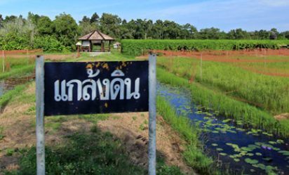
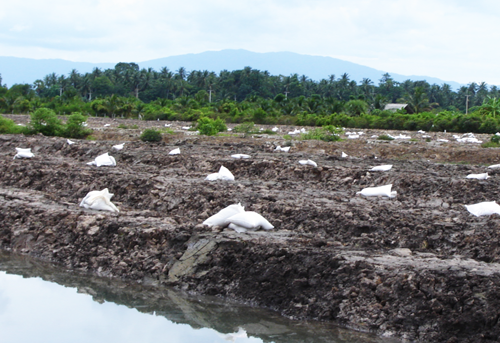
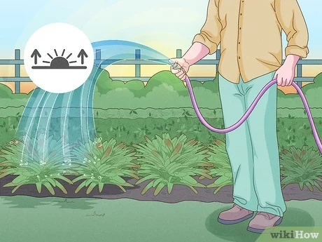
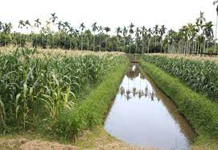
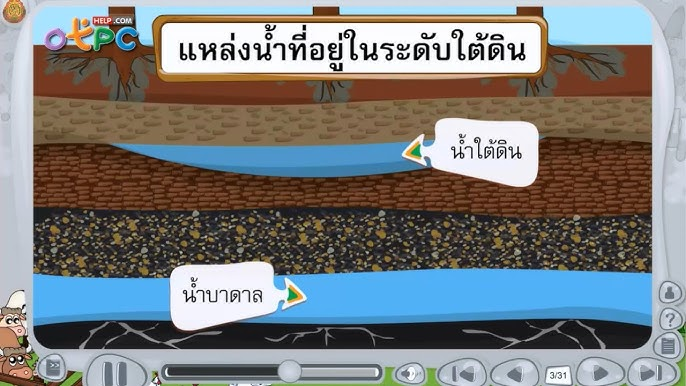
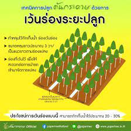

หน้าแรก
ฝนหลวง
แกล้งดิน
โครงการแกล้งดิน
By Pawarit Boonsong
หน้าแรก
ฝนหลวง
แกล้งดิน
โครงการแกล้งดิน
แกล้งดิน เป็นแนวพระราชดำริของพระบาทสมเด็จพระปรมินทรมหาภูมิพลอดุลยเดช เกี่ยวกับการแก้ปัญหาดินเปรี้ยว หรือดินเป็นกรด โดยมีการขังน้ำไว้ในพื้นที่ จนกระทั่งเกิดปฏิกิริยาเคมีทำให้ดินเปรี้ยวจัด จนถึงที่สุด แล้วจึงระบายน้ำออกและปรับสภาพฟื้นฟูดินด้วยปูนขาว จนกระทั่งดินมีสภาพดีพอที่จะใช้ในการเพาะปลูกได้

วิธีการปรับปรุงดิน
ใช้ปูน เช่น ปูนขาว ปูนมาร์ล เปลือกหอยบด หรือหินปูนฝุ่นใส่ลงไปในดินประมาณ 1-3 ตันต่อไร่ แล้วผสมให้เข้ากันปูนซึ่งเป็นเบสจะทำปฏิกิริยาสะเทินกับกรดกำมะถันในดิน ทำให้ดินมีสภาพเป็นกลาง

ใช้น้ำชะล้างกรดในดินโดยตรง วิธีการนี้ใช้เวลานานกว่าวิธีใช้ปูน แต่ได้ผลเหมือนกัน

ยกร่องเพื่อปลูกพืชไร่ ไม้ผล หรือไม้ยืนต้น โดยต้องมีแหล่งน้ำอยู่ข้าง ๆ เพื่อถ่ายเทน้ำได้ ถ้าน้ำในร่องเป็นกรดเมื่อใช้น้ำชะล้ำางกรดบนสันร่อง กรดจะถูกน้ำชะไปยังคูที่อยู่ด้านข้าง แล้วระบายออกไป และต้องคำนึงถึงการเกิดน้ำท่วมในพื้นที่ด้วย ถ้ามีโอกาสน้ำจะท่วม ก็ไม่ควรใช้วิธีนี้

ควบคุมระดับน้ำใต้ดิน ไม่ให้ต่ำกว่า 1 เมตร เพื่อป้องกันไม่ให้ดินชั้นล่างแห้ง หรือทำปฏิกิริยากับออกซิเจน ซึ่งควรจะต้องมีแหล่งน้ำจากระบบชลประทานเข้ามาช่วย

ใช้พืชพันธุ์ที่ทนทานต่อความเป็นกรดมาปลูกในดินเปรี้ยว เช่น มะม่วง มะขาม กระท้อน ขนุน ฝรั่ง ยูคาลิปตัส สะเดา อื่น ๆ

Thanks For Watching